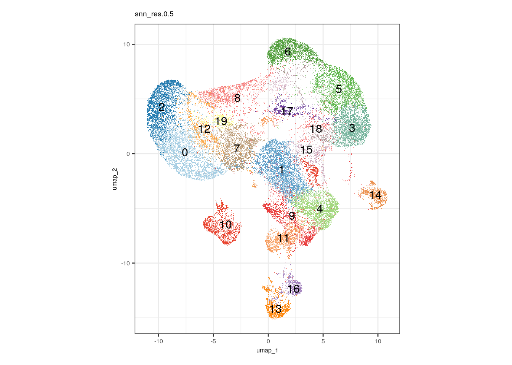
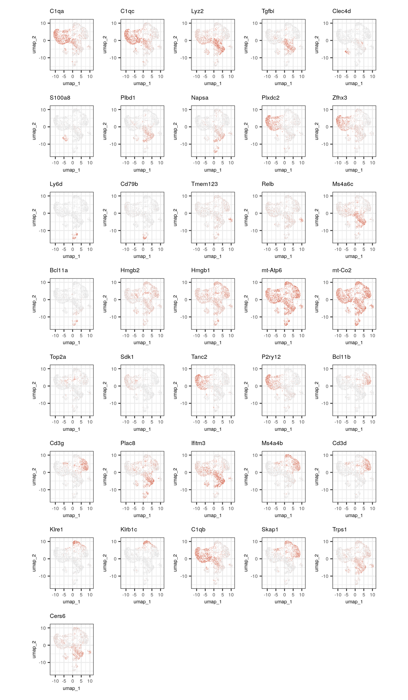
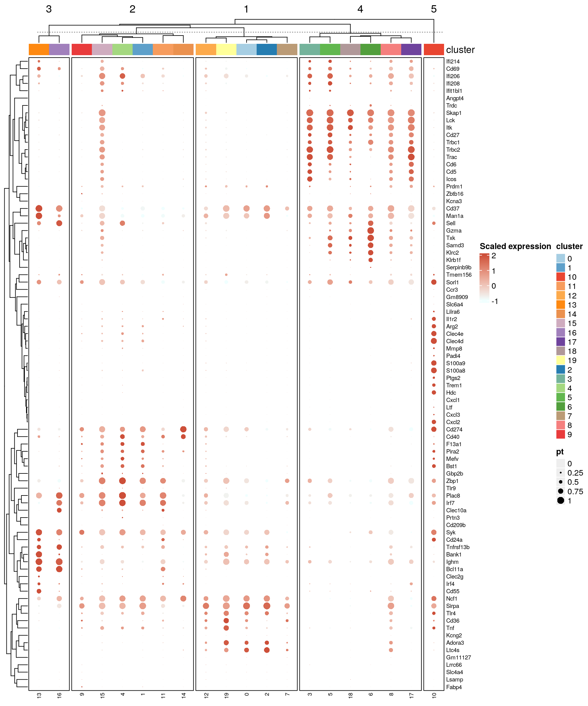
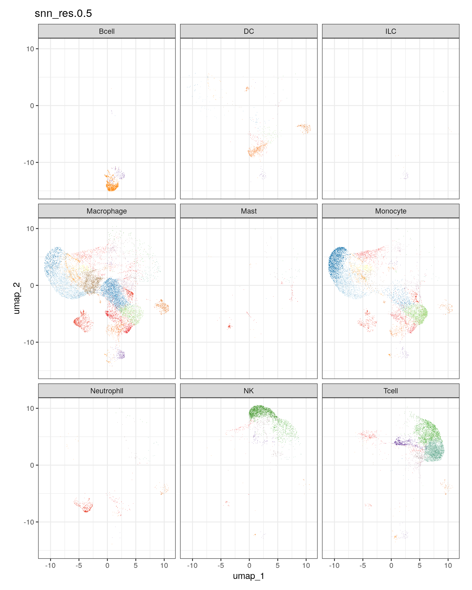

Annotating cell types in Kluc tumors
heinin
2024-02-23
Last updated: 2024-02-26
Checks: 5 2
Knit directory: PD1_mm/
This reproducible R Markdown analysis was created with workflowr (version 1.7.1). The Checks tab describes the reproducibility checks that were applied when the results were created. The Past versions tab lists the development history.
The R Markdown file has unstaged changes. To know which version of
the R Markdown file created these results, you’ll want to first commit
it to the Git repo. If you’re still working on the analysis, you can
ignore this warning. When you’re finished, you can run
wflow_publish to commit the R Markdown file and build the
HTML.
Great job! The global environment was empty. Objects defined in the global environment can affect the analysis in your R Markdown file in unknown ways. For reproduciblity it’s best to always run the code in an empty environment.
The command set.seed(20240223) was run prior to running
the code in the R Markdown file. Setting a seed ensures that any results
that rely on randomness, e.g. subsampling or permutations, are
reproducible.
Great job! Recording the operating system, R version, and package versions is critical for reproducibility.
Nice! There were no cached chunks for this analysis, so you can be confident that you successfully produced the results during this run.
Using absolute paths to the files within your workflowr project makes it difficult for you and others to run your code on a different machine. Change the absolute path(s) below to the suggested relative path(s) to make your code more reproducible.
| absolute | relative |
|---|---|
| /home/hnatri/PD1_mm/ | . |
| /home/hnatri/PD1_mm/code/utilities.R | code/utilities.R |
| /home/hnatri/PD1_mm/code/PD1_mm_themes.R | code/PD1_mm_themes.R |
| /home/hnatri/PD1_mm/code/CART_plot_functions.R | code/CART_plot_functions.R |
| /home/hnatri/PD1_mm/cluster_markers.tsv | cluster_markers.tsv |
| /home/hnatri/PD1_mm/analysis/annotate.Rmd | analysis/annotate.Rmd |
| /home/hnatri/PD1_mm/docs/Layer1_scImmuCC_label.csv | docs/Layer1_scImmuCC_label.csv |
Great! You are using Git for version control. Tracking code development and connecting the code version to the results is critical for reproducibility.
The results in this page were generated with repository version 3e207b9. See the Past versions tab to see a history of the changes made to the R Markdown and HTML files.
Note that you need to be careful to ensure that all relevant files for
the analysis have been committed to Git prior to generating the results
(you can use wflow_publish or
wflow_git_commit). workflowr only checks the R Markdown
file, but you know if there are other scripts or data files that it
depends on. Below is the status of the Git repository when the results
were generated:
Unstaged changes:
Modified: analysis/annotate.Rmd
Modified: analysis/comparative_analysis.Rmd
Modified: analysis/index.Rmd
Note that any generated files, e.g. HTML, png, CSS, etc., are not included in this status report because it is ok for generated content to have uncommitted changes.
These are the previous versions of the repository in which changes were
made to the R Markdown (analysis/annotate.Rmd) and HTML
(docs/annotate.html) files. If you’ve configured a remote
Git repository (see ?wflow_git_remote), click on the
hyperlinks in the table below to view the files as they were in that
past version.
| File | Version | Author | Date | Message |
|---|---|---|---|---|
| Rmd | 3e207b9 | heinin | 2024-02-26 | Added scImmuCC annotations |
| html | 3e207b9 | heinin | 2024-02-26 | Added scImmuCC annotations |
| Rmd | 407ac35 | heinin | 2024-02-26 | Updating the first script |
| html | 407ac35 | heinin | 2024-02-26 | Updating the first script |
| Rmd | 196db6a | heinin | 2024-02-26 | Starting the comparative analysis |
| html | 196db6a | heinin | 2024-02-26 | Starting the comparative analysis |
| Rmd | 627f4bf | heinin | 2024-02-23 | Updated scripts |
| html | 627f4bf | heinin | 2024-02-23 | Updated scripts |
| Rmd | 9e080d7 | heinin | 2024-02-23 | Added the initial annotation script |
| html | 9e080d7 | heinin | 2024-02-23 | Added the initial annotation script |
Introduction
Initial analysis on the scRNAseq data from Kluc tumors treated with PD1 and/or CAR T.
Packages and environment variables
suppressPackageStartupMessages({
#library(cli)
library(Seurat)
library(SeuratObject)
library(SeuratDisk)
library(tidyverse)
library(tibble)
library(ggplot2)
library(ggpubr)
library(ggrepel)
library(workflowr)
library(googlesheets4)
library(scImmuCC)})
setwd("/home/hnatri/PD1_mm/")
set.seed(9999)
options(ggrepel.max.overlaps = Inf)
# Colors, themes, cell type markers, and plot functions
source("/home/hnatri/PD1_mm/code/utilities.R")
source("/home/hnatri/PD1_mm/code/PD1_mm_themes.R")
source("/home/hnatri/PD1_mm/code/CART_plot_functions.R")Importing data
seurat_data <- readRDS("/tgen_labs/banovich/BCTCSF/PD1_mm_Seurat/PD1_mm_Seurat_merged.Rds")Adding human gene names to a separate assay
# Converting mouse gene names to human
mouse_human_genes <- read.csv("http://www.informatics.jax.org/downloads/reports/HOM_MouseHumanSequence.rpt", sep="\t")
convert_mouse_to_human <- function(gene_list){
gene_names <- as.data.frame(matrix(nrow = length(gene_list),
ncol = 2))
colnames(gene_names) <- c("mouse", "human")
rownames(gene_names) <- gene_list
gene_names$mouse <- gene_list
for(gene in gene_list){
class_key = (mouse_human_genes %>% filter(Symbol == gene & Common.Organism.Name=="mouse, laboratory"))[['DB.Class.Key']]
if(!identical(class_key, integer(0)) ){
human_genes = (mouse_human_genes %>% filter(DB.Class.Key == class_key & Common.Organism.Name=="human"))[,"Symbol"]
if(length(human_genes)==0){
gene_names[gene, "human"] <- NA
} else if (length(human_genes)>1){
# human_genes <- paste0(human_genes, collapse = ", ")
bind_df <- data.frame("mouse" = rep(gene, times = length(human_genes)),
"human" = human_genes)
gene_names <- rbind(gene_names, bind_df)
} else {
gene_names[gene, "human"] <- human_genes
}
}
}
return(gene_names)
}
gene_names <- convert_mouse_to_human(rownames(seurat_data@assays$RNA))Warning: There was 1 warning in `filter()`.
ℹ In argument: `DB.Class.Key == class_key & Common.Organism.Name == "human"`.
Caused by warning in `DB.Class.Key == class_key`:
! longer object length is not a multiple of shorter object lengthlength(rownames(seurat_data@assays$RNA))[1] 32285dim(gene_names)[1] 36196 2# Keeping mouse genes with a single human ortholog
gene_names <- gene_names %>%
group_by(mouse) %>%
filter(!is.na(human),
n() == 1) %>%
ungroup()
assay_data <- LayerData(seurat_data, assay = "RNA", layer = "counts")
assay_data <- assay_data[which(rownames(assay_data) %in% gene_names$mouse),]
new_names <- rownames(assay_data)
new_names <- mapvalues(x = new_names,
from = gene_names$mouse,
to = gene_names$human)
rownames(assay_data) <- new_names
seurat_data[["RNA_human"]] <- CreateAssayObject(assay_data,
min.cells = 0,
min.features = 0)Warning: Non-unique features (rownames) present in the input matrix, making
unique#saveRDS(seurat_data, "/tgen_labs/banovich/BCTCSF/PD1_mm_Seurat/PD1_mm_Seurat_merged.Rds")Visualizing clusters
DimPlot(seurat_data,
group.by = "snn_res.0.5",
reduction = "umap",
raster = T,
cols = cluster_col,
label = T) &
coord_fixed(ratio = 1) &
theme_classic() &
NoLegend() &
manuscript_theme
| Version | Author | Date |
|---|---|---|
| 3e207b9 | heinin | 2024-02-26 |
Cell type marker expression
DefaultAssay(seurat_data) <- "RNA"
plot_features <- c()
# Top markers for each cluster
markers <- presto::wilcoxauc(seurat_data,
group_by = "snn_res.0.5",
assay = "data",
seurat_assay = "RNA")
top_markers <- markers %>% group_by(group) %>% slice_max(order_by = auc, n = 2)
FeaturePlot(seurat_data,
features = top_markers$feature,
ncol = 5,
reduction = "umap",
raster = T,
cols = c("gray89", "tomato3")) &
coord_fixed(ratio = 1) &
theme_classic() &
NoLegend() &
manuscript_theme
| Version | Author | Date |
|---|---|---|
| 3e207b9 | heinin | 2024-02-26 |
top_markers <- markers %>% group_by(group) %>% slice_max(order_by = auc, n = 5)
# seurat_object, plot_features, group_var, group_colors, column_title, km=5, row.order = NULL
dotplot_heatmap <- create_dotplot_heatmap(seurat_object = seurat_data,
plot_features = unique(top_markers$feature),
group_var = "snn_res.0.5",
group_colors = cluster_col,
column_title = "",
km = 5, row.order = NULL)
| Version | Author | Date |
|---|---|---|
| 3e207b9 | heinin | 2024-02-26 |
Saving top markers to a file
top_markers <- markers %>% group_by(group) %>% slice_max(order_by = auc, n = 20)
write.table(top_markers, "/home/hnatri/PD1_mm/cluster_markers.tsv",
quote = F, row.names = F, sep = "\t")
# To build on command line, run Rscript -e "rmarkdown::render('/home/hnatri/PD1_mm/analysis/annotate.Rmd')"
# Then "mv /home/hnatri/PD1_mm/analysis/annotate.Rmd /home/hnatri/PD1_mm/docs/"Canonical mouse immune markers
# Mouse immune markers
gs4_deauth()
canonical_markers <- gs4_get("https://docs.google.com/spreadsheets/d/1ApwXjEVtpPB87al6q3ab8TKvZYJTh3iNH1cuO-A_OoU/edit?usp=sharing")
sheet_names(canonical_markers) [1] "Sample summary"
[2] "GSEA GBM"
[3] "Mm immune markers"
[4] "Cluster annotations, JAK mouse"
[5] "Sherri-Cluster annotations, JAK mouse"
[6] "Cluster markers, JAK mouse"
[7] "Sherri-Cluster markers, JAK mouse"
[8] "DL_cluster_res"
[9] "Cluster markers, final data, UPN109pre, no UPN208"
[10] "Cluster annotations, GBM+mouse"
[11] "Cluster markers, GBM+JAK1KO"
[12] "Sherri-Cluster markers, GBM+JAK1KO"
[13] "Cluster markers, final data, immune+fibroblast"
[14] "Cluster annotations, immune+fibroblast"
[15] "Cluster markers, immune+fibroblast, top 100"
[16] "Sherri - Cluster annotations, immune+fibroblast"
[17] "Sherri-Only GBM Charactarization 50 genes"
[18] "Sherri only GBM immune+fibroblast, top 100"
[19] "Cluster annotations"
[20] "Heatmap genes"
[21] "Tumor and CSF sample summary" mm_immune_markers <- read_sheet(canonical_markers, sheet = "Mm immune markers")✔ Reading from "13384 tumor scRNAseq tables".✔ Range ''Mm immune markers''.dotplot_heatmap <- create_dotplot_heatmap(seurat_object = seurat_data,
plot_features = mm_immune_markers$gene_name,
group_var = "snn_res.0.5",
group_colors = cluster_col,
column_title = "",
km = 5, row.order = NULL)Warning: The following requested variables were not found: Cd51, Nirp3, 117r
| Version | Author | Date |
|---|---|---|
| 3e207b9 | heinin | 2024-02-26 |
Using sc-ImmuCC to annotate immune cells
count_data <- LayerData(seurat_data, assay = "RNA_human", layer = "counts")
#scImmuCC_Layered(count = count_data, Non_Immune = FALSE)
# Importing results
scicc_labels <- read.csv("/home/hnatri/PD1_mm/docs/Layer1_scImmuCC_label.csv",
row.names = "X")
length(colnames(seurat_data))
length(intersect(scicc_labels$barcodes, colnames(seurat_data)))
seurat_data$scImmuCC_celltype <- mapvalues(x = colnames(seurat_data),
from = scicc_labels$barcodes,
to = scicc_labels$cell_type)
# Plotting
DimPlot(seurat_data,
group.by = "scImmuCC_celltype",
reduction = "umap",
raster = T,
#cols = scImmuCC_celltype_col,
label = T) &
coord_fixed(ratio = 1) &
theme_classic() &
NoLegend() &
manuscript_theme
| Version | Author | Date |
|---|---|---|
| 3e207b9 | heinin | 2024-02-26 |
#saveRDS(seurat_data, "/tgen_labs/banovich/BCTCSF/PD1_mm_Seurat/PD1_mm_Seurat_merged.Rds")DimPlot(seurat_data,
split.by = "scImmuCC_celltype",
group.by = "snn_res.0.5",
ncol = 3,
reduction = "umap",
raster = T,
cols = cluster_col) &
coord_fixed(ratio = 1) &
theme_classic() &
NoLegend()
| Version | Author | Date |
|---|---|---|
| 3e207b9 | heinin | 2024-02-26 |
table(seurat_data$scImmuCC_celltype,
seurat_data$snn_res.0.5)
0 1 2 3 4 5 6 7 8 9 10 11 12
Bcell 0 2 0 1 0 2 0 0 2 1 4 1509 2
DC 5 41 33 17 3 7 68 0 85 7 4 6 715
ILC 2 0 0 0 0 0 0 0 0 0 0 1 2
Macrophage 370 3831 2258 1048 67 1306 1056 136 2077 2573 1457 122 608
Mast 143 2 2 0 4 0 1 7 23 3 78 3 2
Monocyte 27 706 2013 3122 7 1231 2057 13 716 120 529 50 314
Neutrophil 82 0 1 0 3 0 0 16 123 0 449 8 21
NK 193 0 0 0 743 99 0 2891 21 1 26 11 3
Tcell 3966 11 0 0 2553 543 2 67 17 4 29 42 5
13 14 15 16 17 18 19
Bcell 0 0 4 2 107 0 0
DC 15 95 252 32 34 2 0
ILC 0 0 3 0 36 0 0
Macrophage 1097 603 666 929 324 343 0
Mast 2 1 1 10 1 4 0
Monocyte 524 373 156 128 64 22 2
Neutrophil 10 1 87 25 2 7 0
NK 5 58 14 16 8 13 14
Tcell 5 263 78 12 45 6 218Adding annotations from the Google Sheet
gs4_deauth()
markers_annotations <- gs4_get("https://docs.google.com/spreadsheets/d/1iWYBouwQlQboI-rwiujC0QKJ6lq9XeTffbKm2Nz8es0/edit?usp=sharing")
sheet_names(markers_annotations)[1] "Cluster top markers" "Cluster annotations" "scImmuCC"
[4] "Mm immune markers" annotations <- read_sheet(markers_annotations, sheet = "Cluster annotations")✔ Reading from "PD1 mm scRNAseq tables".✔ Range ''Cluster annotations''.seurat_data$celltype <- mapvalues(seurat_data$snn_res.0.5,
from = annotations$snn_res.0.5,
to = annotations$annotation)
DimPlot(seurat_data,
group.by = "celltype",
reduction = "umap",
raster = T,
label = T) &
coord_fixed(ratio = 1) &
theme_classic() &
NoLegend()
saveRDS(seurat_data, "/tgen_labs/banovich/BCTCSF/PD1_mm_Seurat/PD1_mm_Seurat_merged.Rds")
sessionInfo()R version 4.3.0 (2023-04-21)
Platform: x86_64-pc-linux-gnu (64-bit)
Running under: Ubuntu 22.04.3 LTS
Matrix products: default
BLAS: /usr/lib/x86_64-linux-gnu/openblas-pthread/libblas.so.3
LAPACK: /usr/lib/x86_64-linux-gnu/openblas-pthread/libopenblasp-r0.3.20.so; LAPACK version 3.10.0
locale:
[1] LC_CTYPE=en_US.UTF-8 LC_NUMERIC=C
[3] LC_TIME=en_US.UTF-8 LC_COLLATE=en_US.UTF-8
[5] LC_MONETARY=en_US.UTF-8 LC_MESSAGES=en_US.UTF-8
[7] LC_PAPER=en_US.UTF-8 LC_NAME=C
[9] LC_ADDRESS=C LC_TELEPHONE=C
[11] LC_MEASUREMENT=en_US.UTF-8 LC_IDENTIFICATION=C
time zone: Etc/UTC
tzcode source: system (glibc)
attached base packages:
[1] grid stats graphics grDevices utils datasets methods
[8] base
other attached packages:
[1] ComplexHeatmap_2.18.0 viridis_0.6.3 viridisLite_0.4.2
[4] circlize_0.4.15 plyr_1.8.8 RColorBrewer_1.1-3
[7] scImmuCC_1.0.0 GSVA_1.50.0 googlesheets4_1.1.0
[10] workflowr_1.7.1 ggrepel_0.9.3 ggpubr_0.6.0
[13] lubridate_1.9.2 forcats_1.0.0 stringr_1.5.0
[16] dplyr_1.1.2 purrr_1.0.1 readr_2.1.4
[19] tidyr_1.3.0 tibble_3.2.1 ggplot2_3.4.2
[22] tidyverse_2.0.0 SeuratDisk_0.0.0.9021 Seurat_5.0.1
[25] SeuratObject_5.0.1 sp_1.6-1
loaded via a namespace (and not attached):
[1] fs_1.6.2 matrixStats_1.0.0
[3] spatstat.sparse_3.0-1 bitops_1.0-7
[5] doParallel_1.0.17 httr_1.4.6
[7] tools_4.3.0 sctransform_0.4.1
[9] backports_1.4.1 utf8_1.2.3
[11] R6_2.5.1 HDF5Array_1.30.0
[13] lazyeval_0.2.2 uwot_0.1.14
[15] GetoptLong_1.0.5 rhdf5filters_1.14.1
[17] withr_2.5.0 gridExtra_2.3
[19] progressr_0.13.0 cli_3.6.1
[21] Biobase_2.62.0 Cairo_1.6-0
[23] spatstat.explore_3.2-1 fastDummies_1.7.3
[25] labeling_0.4.2 sass_0.4.6
[27] spatstat.data_3.0-1 ggridges_0.5.4
[29] pbapply_1.7-0 parallelly_1.36.0
[31] rstudioapi_0.14 RSQLite_2.3.1
[33] shape_1.4.6 generics_0.1.3
[35] ica_1.0-3 spatstat.random_3.1-5
[37] car_3.1-2 Matrix_1.6-5
[39] fansi_1.0.4 S4Vectors_0.40.2
[41] abind_1.4-5 lifecycle_1.0.3
[43] whisker_0.4.1 yaml_2.3.7
[45] carData_3.0-5 SummarizedExperiment_1.32.0
[47] rhdf5_2.46.1 SparseArray_1.2.3
[49] Rtsne_0.16 blob_1.2.4
[51] promises_1.2.0.1 crayon_1.5.2
[53] miniUI_0.1.1.1 lattice_0.21-8
[55] beachmat_2.18.0 cowplot_1.1.1
[57] annotate_1.80.0 KEGGREST_1.42.0
[59] magick_2.7.4 pillar_1.9.0
[61] knitr_1.43 GenomicRanges_1.54.1
[63] rjson_0.2.21 future.apply_1.11.0
[65] codetools_0.2-19 leiden_0.4.3
[67] glue_1.6.2 getPass_0.2-4
[69] data.table_1.14.8 vctrs_0.6.2
[71] png_0.1-8 spam_2.9-1
[73] cellranger_1.1.0 gtable_0.3.3
[75] cachem_1.0.8 xfun_0.39
[77] S4Arrays_1.2.0 mime_0.12
[79] survival_3.5-5 gargle_1.4.0
[81] SingleCellExperiment_1.24.0 iterators_1.0.14
[83] ellipsis_0.3.2 fitdistrplus_1.1-11
[85] ROCR_1.0-11 nlme_3.1-162
[87] bit64_4.0.5 RcppAnnoy_0.0.20
[89] GenomeInfoDb_1.38.5 rprojroot_2.0.3
[91] bslib_0.4.2 irlba_2.3.5.1
[93] KernSmooth_2.23-21 colorspace_2.1-0
[95] BiocGenerics_0.48.1 DBI_1.1.3
[97] tidyselect_1.2.0 processx_3.8.1
[99] curl_5.0.0 bit_4.0.5
[101] compiler_4.3.0 git2r_0.32.0
[103] graph_1.80.0 hdf5r_1.3.8
[105] DelayedArray_0.28.0 plotly_4.10.2
[107] scales_1.2.1 lmtest_0.9-40
[109] callr_3.7.3 digest_0.6.31
[111] goftest_1.2-3 presto_1.0.0
[113] spatstat.utils_3.0-3 rmarkdown_2.22
[115] XVector_0.42.0 htmltools_0.5.5
[117] pkgconfig_2.0.3 sparseMatrixStats_1.14.0
[119] MatrixGenerics_1.14.0 highr_0.10
[121] fastmap_1.1.1 GlobalOptions_0.1.2
[123] rlang_1.1.1 htmlwidgets_1.6.2
[125] shiny_1.7.4 DelayedMatrixStats_1.24.0
[127] farver_2.1.1 jquerylib_0.1.4
[129] zoo_1.8-12 jsonlite_1.8.5
[131] BiocParallel_1.36.0 BiocSingular_1.18.0
[133] RCurl_1.98-1.12 magrittr_2.0.3
[135] GenomeInfoDbData_1.2.11 dotCall64_1.0-2
[137] patchwork_1.1.2 Rhdf5lib_1.24.1
[139] munsell_0.5.0 Rcpp_1.0.10
[141] reticulate_1.29 stringi_1.7.12
[143] zlibbioc_1.48.0 MASS_7.3-60
[145] parallel_4.3.0 listenv_0.9.0
[147] deldir_1.0-9 Biostrings_2.70.1
[149] splines_4.3.0 tensor_1.5
[151] hms_1.1.3 ps_1.7.5
[153] igraph_1.4.3 spatstat.geom_3.2-1
[155] ggsignif_0.6.4 RcppHNSW_0.5.0
[157] reshape2_1.4.4 stats4_4.3.0
[159] ScaledMatrix_1.10.0 XML_3.99-0.14
[161] evaluate_0.21 foreach_1.5.2
[163] tzdb_0.4.0 httpuv_1.6.11
[165] RANN_2.6.1 polyclip_1.10-4
[167] clue_0.3-64 future_1.32.0
[169] scattermore_1.2 rsvd_1.0.5
[171] broom_1.0.4 xtable_1.8-4
[173] RSpectra_0.16-1 rstatix_0.7.2
[175] later_1.3.1 googledrive_2.1.0
[177] memoise_2.0.1 AnnotationDbi_1.64.1
[179] IRanges_2.36.0 cluster_2.1.4
[181] timechange_0.2.0 globals_0.16.2
[183] GSEABase_1.64.0